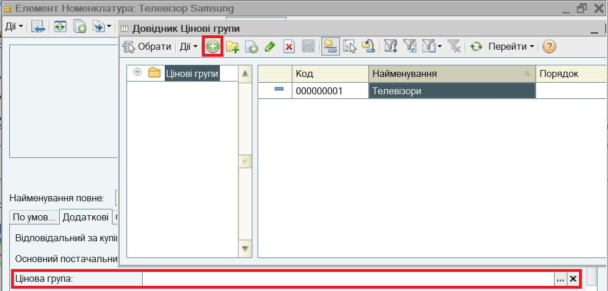
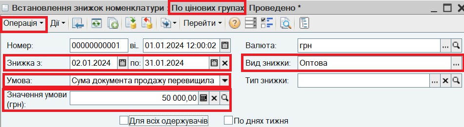
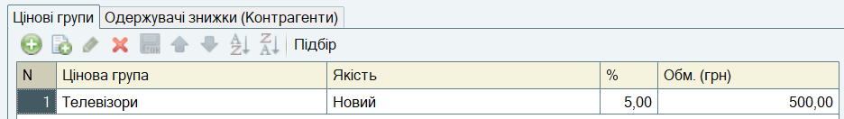
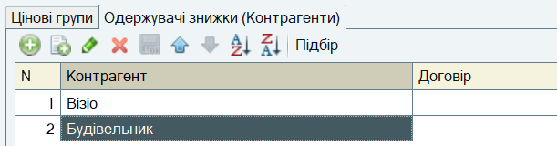
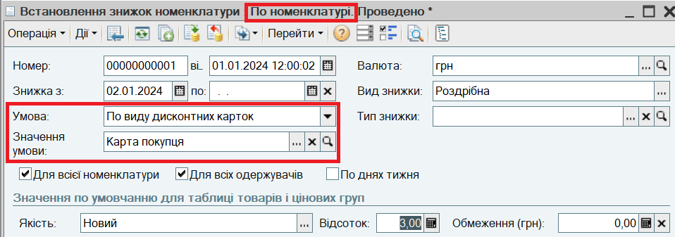

. Відкриється довідник Цінові групи. Додайте Цінову групу "Телевізори" і внесіть її в номенклатурну картку.
. Відкриється довідник Цінові групи. Додайте Цінову групу "Телевізори" і внесіть її в номенклатурну картку.Встановлення знижок здійснюється документом Встановлення знижок номенклатури.
ПРИКЛАД.
Встановлюється знижка 5% при продажу товарів групи "Телевізори" покупцям "Візіо" і "Будівельник" на суму більше 50000 грн. Максимальна знижка на одиницю товару не має перевищувати 500 грн. Знижка діє протягом січня.
1. Зазначте для номенклатури "Телевізор Samsung" Цінову групу "Телевізори".
Для цього зайдіть в номенклатурну картку товару. На закладці Додаткові виберіть Цінову групу за кнопкою . Відкриється довідник Цінові групи. Додайте Цінову групу "Телевізори" і внесіть її в номенклатурну картку.

2. Відкрийте список документів Встановлення знижок номенклатури. Для цього в меню Документи виберіть пункт Ціноутворення, підпункт Встановлення знижок номенклатури.
Введіть новий документ, встановіть вид операції По цінових групах. Заповніть заголовок документа:

3. На закладці Цінові групи зазначається інформація про цінову групу, відсоток і обмеження знижки:

4. На закладці Одержувачі знижки (Контрагенти) перерахуйте покупців - одержувачів знижки:

Проведіть за кнопкою ОК.
ПРИМІТКА.
Для відміни наданих знижок використовується документ Відміна знижок. Документ створюється з пункту меню Документи - Ціноутворення - Відміна знижок.
Передбачена також можливість надання знижок за дисконтними картками покупця. Інформація про дисконтні картки вводиться у довідник Інформаційні картки. В документі Встановлення знижок номенклатури зазначається Умова По дисконтній картці або По видах дисконтних карток, Значення умови - дисконтна картка або вид дисконтної картки.

УВАГА.
У випадку, якщо на продаж того самого товару діє одночасно кілька автоматичних знижок, в документі продажу встановлюється максимальна з призначених знижок.
УВАГА.
Крім автоматичних знижок при продажу можуть застосовуватися ручні знижки, які призначаються в документі продажу. Ручні знижки застосовуються до суми продажу, визначеної з урахуванням автоматичної знижки.